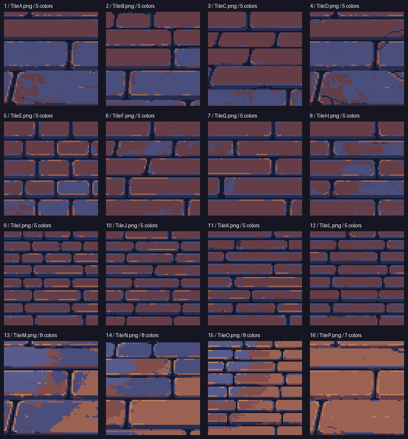
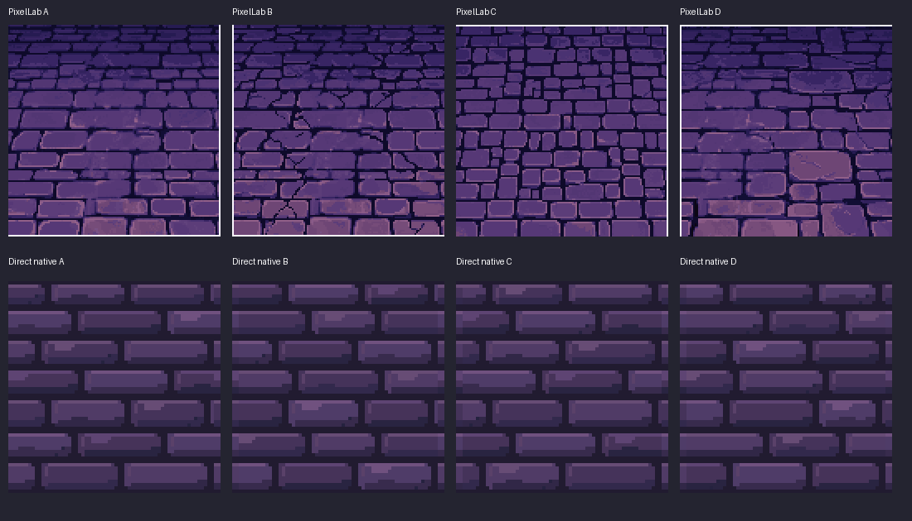

Latest floor request: 15 generations for sixteen reference-conditioned 64×64 tiles. Native LibreSprite cleanup selected twelve outputs. Current floor and reference.

Pro floor: four 128×128 candidates for 10 generations. A/B selected over direct native trials; C/D rejected. PixFlux wall: one 64×64 experiment for one generation, rejected in favor of direct LibreSprite. All final edits and exports were performed in LibreSprite.

Native input and generated alternative at native size.
{
"actual_generations": 26,
"remaining_before": 1090.2,
"remaining_after": 1064.2,
"subscription": "Tier 2 Pixel Artisan",
"cash_credits": 0,
"preferred_budget": [
10,
25
],
"soft_ceiling": 35,
"calls": [
{
"job": "931e17bf-23c3-491d-91a7-9805fb37f093",
"endpoint": "create_image_pro",
"size": [
128,
128
],
"cost": 10,
"outputs": 4,
"selected": [
"A",
"B"
],
"rejected": [
"C",
"D"
],
"receipt": "Correction/PixelLab/FloorProReceipt.json"
},
{
"job": "490becbd-129a-4c27-b759-5bde57e83da3",
"endpoint": "create_image_pixflux",
"size": [
64,
64
],
"cost": 1,
"outputs": 1,
"selected": [],
"decision": "Direct LibreSprite wall preferred; generated variant adds little and introduces extra shades.",
"receipt": "Correction/PixelLab/WallFluxReceipt.json"
},
{
"job": "dfc8b65c-28be-4db0-a59e-cf35ed299d4a",
"endpoint": "create_tiles_pro",
"size": [
64,
64
],
"cost": 15,
"outputs": 16,
"selected": [
"A",
"B",
"D",
"E",
"F",
"G",
"H",
"I",
"J",
"K",
"L",
"M"
],
"rejected": [
"C",
"N",
"O",
"P"
],
"decision": "Broad generated courses retained, palette and course seams finalized in LibreSprite. New floor-only request authorized separately from the earlier reconstruction budget.",
"receipt": "Correction/FlagstoneRebuild/PixelLabResult.json"
}
],
"no_whole_scene_generation": true,
"budget_scope": "preferred_budget and soft_ceiling describe the earlier 11-generation reconstruction; the later reference-floor request separately authorized its 15-generation tileset."
}